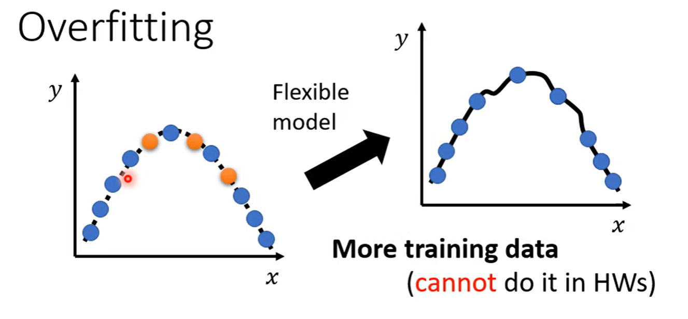
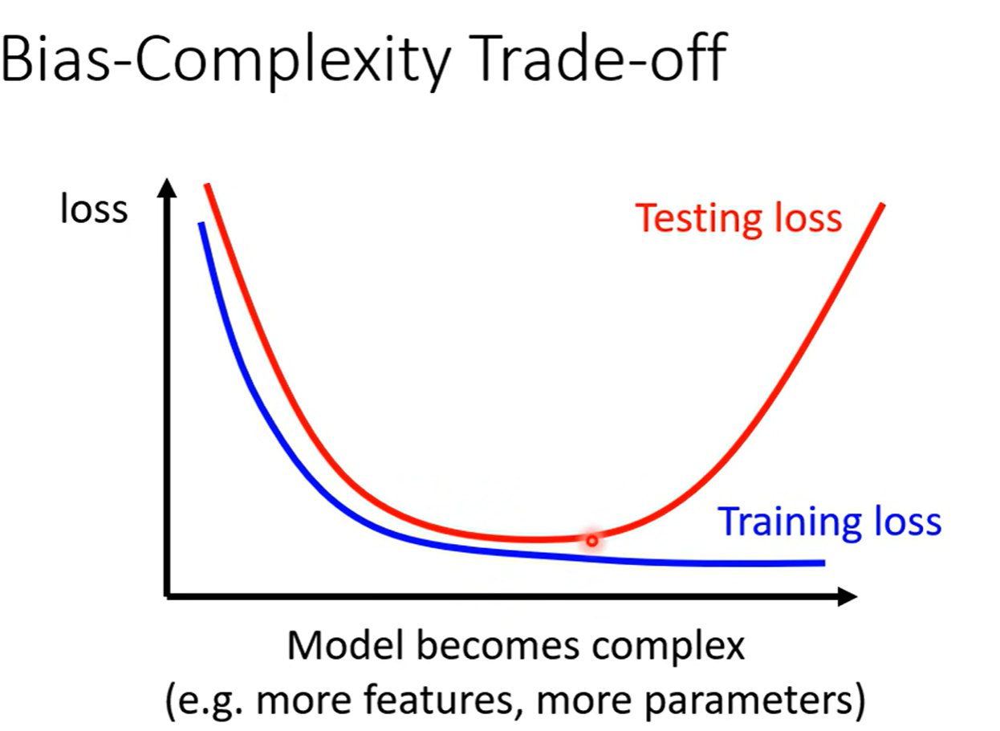

Nerual Network and Deep Learning Basics
I. Basic of Neural Network and Deep Learning
step
model, define loss, optimization
definition
\(c\,\text{sigmoid}(b+wx)=c\frac{1}{1+\text{exp}[-(b+wx)]}\)
\(y = b + \sum_{i}c_i \, \text{sigmoid}(b_i+w_ix_1)\rightarrow y = b + \sum_{i}c_i \, \text{sigmoid}(b_i+\sum_{j} w_{ij}x_j)\)


\(\mathbf{x}\rightarrow \mathbf{a}\)的复杂化

II. How to Solve Large Traninig Loss
方法一：Model bias
\(\mathbf{x}\)太小，导致\(f_{\theta_1}(\mathbf{x})\), \(f_{\theta_2}(\mathbf{x})\), \(f_{\theta_3}(\mathbf{x})\)......函数集合整体的Loss效果上限很低
解决办法：增加\(\mathbf{x}\)维度，增加网络深度
方法二：Optimization Issue
进入local minimum
梯度下降算法不给力，例如这种情况：

56Layer的Network弹性一定比20Layer的Network大，也就是说Model bias更小，但是无论是在训训练数据集还是在测试数据集上的效果都没有20Layer Network好，所以证明是optimization过程出现的问题。
做法就是找一些比较浅的Model，进行测试对比，这些浅的model能够保证optimization过程已经做的足够好了。
然后如果我们发现一些比较深的Model效果反而不如浅的Model好，就可能是Optimization过程的问题
III. How to solve Large Testing Loss with small Training Loss
==overfitting==
一个很极端的例子：


问题一：如何解决Overfitting的问题：
-
(1) 可能最有效的方法：增加Training Data

搜集资料
或者Data argumentation
基于已有的知识，创造一些Training data

-
(2) 降低Model弹性：取决于对问题的理解
如果我们指导一些背景知识，比如说指导要拟合的这条曲线是二次曲线，就不用用三次四次高次曲线来做训练
减少神经元数量

所以Model bias和Overfitting存在一定矛盾

问题二：Mismatch
overfitting可以通过增加Training Data来解决，但是mismatch不同：
mismatch意味着：test data和Training data的分布不一样

IV. Classfication
4.1 Regression as Classfication
我们将class也量化为数字

class as one-hot vector:

为什么是one-hot ?

4.2 分类模型的整体流程：
我们以“图片分类”为例，但文本、语音也类似。
1️⃣ 输入
输入一张图片，经过卷积或 Transformer，得到一个特征向量：
2️⃣ 全连接层（Linear Layer）
将特征映射到类别数目的维度（例如 3 类）：
这得到一个“打分向量”（logits）：
例如 [2.1, 0.9, -1.3]
3️⃣ Softmax 层
把 logits 转为概率：
表示模型认为：
- 猫的概率 70%
- 狗的概率 25%
- 鸟的概率 5%
4️⃣ 计算损失（Loss）
训练时我们知道真实标签（one-hot 向量）：
模型输出：
损失函数（通常是 交叉熵 Cross-Entropy Loss）：
只对正确类别（猫）的概率起作用：
训练目标：让正确类别的概率尽可能接近 1。
4.3 自回归 vs 分类：类比理解
| 概念 | 自回归（autoregressive） | 分类任务（classification） |
|---|---|---|
| 目标 | 预测下一个token或数值 | 判断输入属于哪个类别 |
| 输出形式 | 下一步的分布 | 类别概率分布 |
| 输出维度 | 词表大小（vocab size） | 类别数（class size） |
| 损失函数 | Cross Entropy | Cross Entropy |
| 训练标签 | 下一个 token 的 one-hot | 真实类别的 one-hot |
所以其实分类任务是自回归的“特例”：
自回归预测“下一个词是哪一个”；
分类预测“输入属于哪一个类别”。
4.4 softmax函数

4.5 Loss函数
MSE VS Cross-Entropy

Cross-Entropy不容易卡住，可以从左上角走到右下角